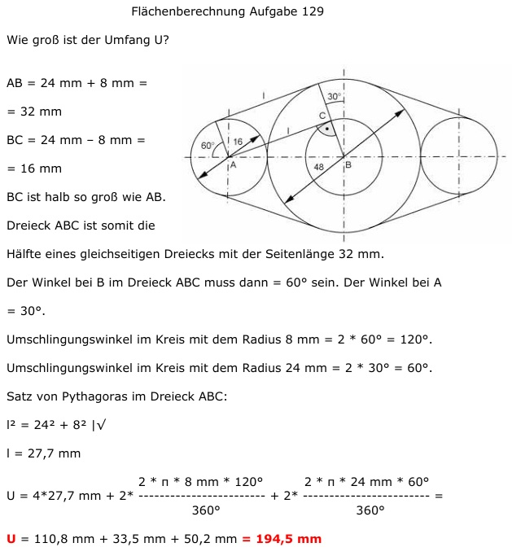

Aufgabe 129 Wie groß ist der Umfang U?  AB = 24 mm + 8 mm = = 32 mm BC = 24 mm – 8 mm = = 16 mm BC ist halb so groß wie AB. Dreieck ABC ist somit die Hälfte eines gleichseitigen Dreiecks mit der Seitenlänge 32 mm. Der Winkel bei B im Dreieck ABC muss dann = 60° sein. Der Winkel bei A = 30°. Umschlingungswinkel im Kreis mit dem Radius 8 mm = 2 * 60° = 120°. Umschlingungswinkel im Kreis mit dem Radius 24 mm = 2 * 30° = 60°. Satz von Pythagoras im Dreieck ABC: l2 = 242 + 82 |√ l = 27,7 mm 2 * π * 8 mm * 120° U = 4*27,7 mm + 2* --------------------- + 360° 2 * π * 24 mm * 60° = 2 * --------------------- = 360° = 110,8 mm + 33,5 mm + 50,2 mm = 194,5 mm